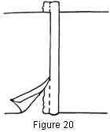
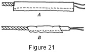

1930—Millinery Processes
by Carlotta M. Brown
CORDING
Cordings are finishes made by covering cords of various sizes with bias strips of material. These cord-ings may be used as a seam finish or a finish at the edge of the brim. They may be inserted between the top and the facing or be placed on the outside of both brim and crown for trimming. In the former case they may be left with unfinished seam edges; in the latter they must have the seam edges turned inside the casing.
Cord with unfinished edges. The size of the foundation cord must be decided upon before the bias strips are cut for the covering. Cable cord may be used, dividing it into strands if the original size is too large; several strands of yarn may be used for a soft, light-weight foundation; or, if a firm and definite line is desired, common binding twine may be employed. Cut a bias strip wide enough to cover the foundation cord, allowing a quarter-inch seam on each side. If more than one bias strip is needed, cut and sew all the strips together, pressing the seams open before starting to sew the strips over the foundation cord. Cut the cord the length needed and, starting at one end, fold the bias strip, right side out, over the cord, with the raw edges meeting (Fig. 20). Stitch by hand with the running stitch. The thread should be run close to the cord to give the finished cording a round, firm appearance. This cording is then inserted between the two surfaces, making an attractive finish.
Figure 20. Cord placed in seam.
Finished cord. When a finished cord is to be used, cut the bias strips, measuring, seaming, and pressing as explained above for the cord with unfinished edges. Fold the bias strip with the right side in and the raw edges meeting. Measure and mark the exact depth of the casing to be made for the cord. Place the casing under the machine foot, with the needle at the marked point, and stitch, pulling the bias material as much as possible when stitching, so that the line of stitching will not be tighter than the unstitched side of the casing when turned. To insert the cord in the casing most easily, cut the foundation cord the length of the casing strip and, with a heavy double thread 10 or 12 inches long and millinery needle, attach the cord to one end of the casing. Then, with the eye inserted first, run the needle through, pulling the casing back gently into place over the cord (Fig. 21). These cords may be applied in any decorative way desired.
Figure 21. Cording. A, unfinished cord; B, finished cord.
Corded side crown. Cording may be used instead of plain tucks. Measure off groupings, or divisions, as for tucks (see Tucked Side Crowns), making casings for cords 1/8 of an inch wide, so that a light-weight cord may be threaded into the casing. As in the straight-tucked side crown, the back seam is sewed and pressed open before the casings are stitched into place. Rip back a few stitches where the casings have been started, to give a space for the insertion of the cord. Attach the cord to a bodkin with a heavy thread, allowing enough space between the cord and the bodkin to pull easily, and pull the cord through the casing. Cut so that the ends of the cord may be lapped about 1/16 of an inch. Close the opening with small hand stitches.